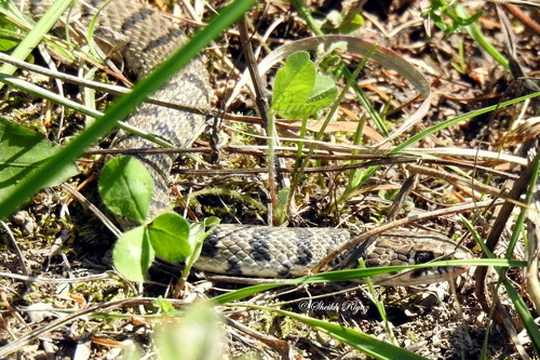

Snakes of Uzbekistan
16 living snake species are recorded in Uzbekistan in SnakeList: 7 venomous and 9 non-venomous, from 5 families.
- 16living species
- 7venomous
- 9non-venomous
- 5families
These totals count the unique living snake species SnakeList records in Uzbekistan. A species counts if it is recorded anywhere in the country, so not every snake lives in every part of it.
Species
Showing 16 species
 Asian RacerHemorrhois nummifer
Asian RacerHemorrhois nummifer Barred Wolf SnakeLycodon striatus
Barred Wolf SnakeLycodon striatus
Braid SnakePlatyceps ladacensis Central Asian CobraNaja oxiana
Central Asian CobraNaja oxiana Common Cat SnakeBoiga trigonata
Common Cat SnakeBoiga trigonata Derafshi SnakeLytorhynchus ridgewayi
Derafshi SnakeLytorhynchus ridgewayi Dione SnakeElaphe dione
Dione SnakeElaphe dione Dwarf Sand BoaEryx miliaris
Dwarf Sand BoaEryx miliaris Halys Pit ViperGloydius halys
Halys Pit ViperGloydius halys Karaganda PitviperGloydius caraganus
Karaganda PitviperGloydius caraganus Saw-scaled ViperEchis carinatus
Saw-scaled ViperEchis carinatus Spotted Desert RacerPlatyceps karelini
Spotted Desert RacerPlatyceps karelini Spotted Whip SnakeHemorrhois ravergieri
Spotted Whip SnakeHemorrhois ravergieri Steppe Ribbon RacerPsammophis lineolatus
Steppe Ribbon RacerPsammophis lineolatus Steppe ViperVipera renardi
Steppe ViperVipera renardi Wadi RacerPlatyceps rhodorachis
Wadi RacerPlatyceps rhodorachis
No snakes in Uzbekistan match.
Uzbekistan’s snakes in numbers
- Families: Colubridae 9, Viperidae 4, Boidae 1, Elapidae 1, Psammophiidae 1.
How precisely they are recorded
Of the 16 living species recorded in Uzbekistan, 9 are recorded by region in SnakeList’s data; 7 are recorded only for Uzbekistan as a whole, so the region pages list them as possible rather than recorded. SnakeList records each species by region, not by exact spot, so a species listed for a region may live in only part of it.
Regions
The regions where SnakeList records snakes, with how many living species are recorded in each. Each page has its species, venomous snakes, families, the species found only there, its cities and neighbours.
- Bukhara 2 species
- Jizzakh 3 species
- Karakalpakstan 3 species
- Navoiy 3 species
- Qashqadaryo 4 species
- Samarqand 2 species
- Surxondaryo 4 species
- Tashkent 3 species
- Xorazm 1 species
No place matches that.
Cities
Its biggest cities, biggest first. SnakeList records snakes by region, not by city, so each city page shows the species recorded in its region and, separately, those only possible there - not species confirmed in the city.